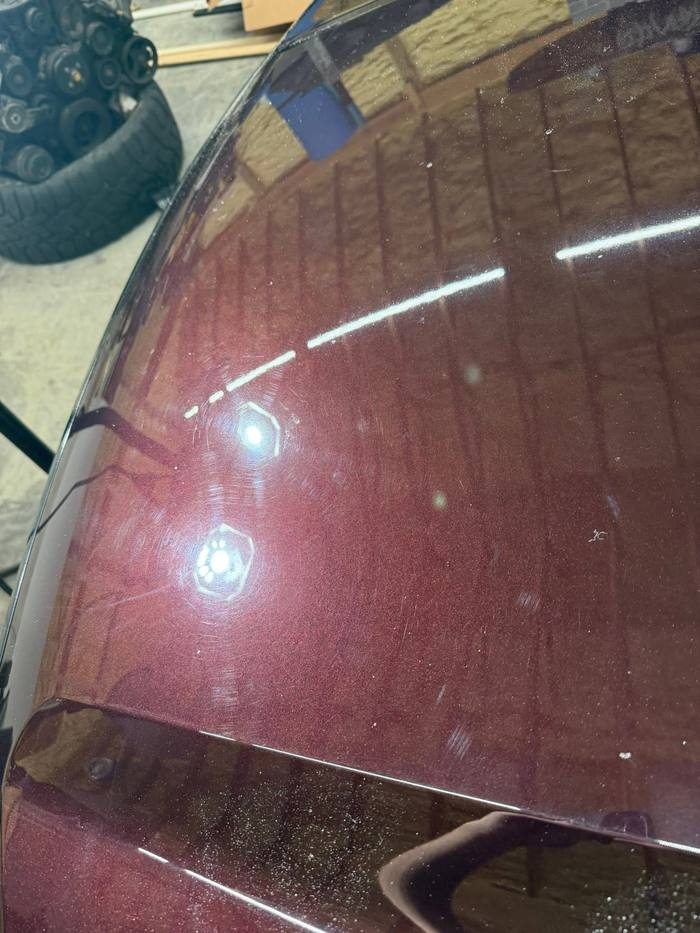
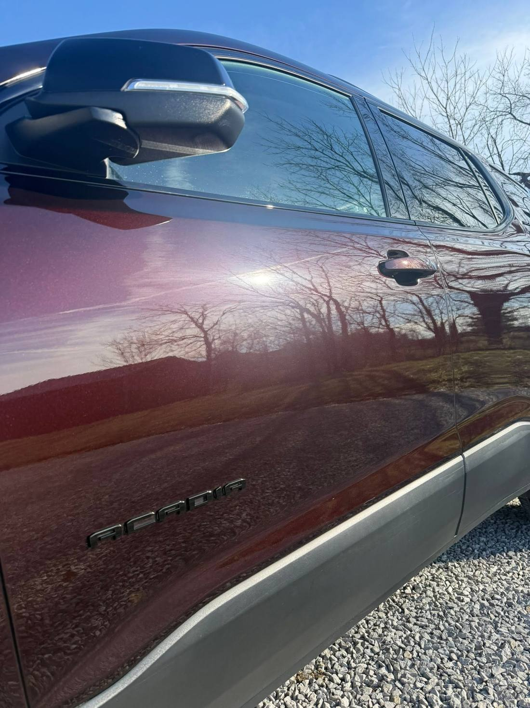

Internal Review, Not for Publishing
The interior pairs are confirmed and live on the Our Work page as flip cards. The correction groupings are fixed. All that remains is which correction photos are the before and which are the after.
The Remaining Question
A flip card needs one photo of the damage and one of the same panel fixed. Below are the two correction jobs. If any two photos in a job are the same panel before and after polishing, name them and they become flip cards. If they are all just work-in-progress shots, say so and the cards stay as photo sets, which is completely fine.


Two photos, so this is the natural flip-card candidate. Is A-1 the before and B-2 the after? Or is the work light shot an inspection taken before any polishing?




Four photos of one job. Tape on a panel usually means a correction line, with the untouched half on one side. If one of these shows both halves, that single photo is a better before and after than any pair, and it can be shown full width instead of a flip card.